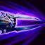
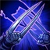

Thông tin tướng: Zed |
||
|
|
|
|
|
(Nội tại) |
Bất cứ khi nào Zed tung đòn đánh thường lên một kẻ địch dưới 50% máu, hắn gây thêm 6-10% máu tối đa của mục tiêu thành sát thương phép. Hiệu ứng này chỉ có thể xảy ra trên cùng mục tiêu mỗi 10 giây. |
|
|
(Kĩ năng Q) |
Tầm sử dụng: 900 KÍCH HOẠT: Zed ném phi tiêu theo hướng chỉ định, gây sát thương vật lí lên tất cả kẻ địch
trúng
chiêu trên 1 đường thẳng. Những kẻ địch sau mục tiêu đầu tiên chỉ nhận 60% sát thương. |
|
|
(Kĩ năng W) |
Tầm sử dụng: 600 NỘI TẠI: Sát thương vật lí của Zed được tăng thêm. KÍCH HOẠT: Phân thân của Zed lướt tới trước rồi yên vị trong 4 giây. Tái kích hoạt Phân Thân Bóng Tối sẽ khiến Zed đổi vị trí với phân thân. |
|
|
(Kĩ năng E)  |
Tầm sử dụng: 290 KÍCH HOẠT: Zed cùng phân thân xoáy lưỡi kiếm, tạo ra một luồng sóng năng lượng hắc ám gây sát
thương
vật lí lên các kẻ địch cạnh bên. Mỗi tướng địch trúng phải Đường Kiếm Bóng Tối của Zed sẽ
khiến thời
gian hồi chiêu của Phân Thân Bóng Tối giảm đi 2 giây. |
|
|
(Kĩ năng R)  |
Tầm sử dụng: 625 KÍCH HOẠT: Zed tạo 1 phân thân bóng tối tại chỗ trong 6 giây, trở nên không thể bị chọn làm
mục tiêu
rồi lướt tới sau lưng 1 tướng địch. Khi đến nơi, hắn tạo 1 dấu ấn tử thần lên nạn nhân và có khả
năng đi
xuyên lính. |
|